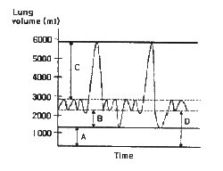
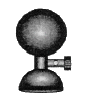
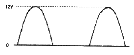
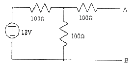
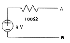
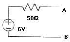
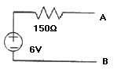
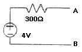
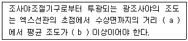

의공기사 (2013-09-28 기출문제)
1과목: 기초의학 및 의공학
1. 물체의 온도를 알기 위해 측정하는 성질 중 측정 대상에 직접 접촉하지 않는 비접촉식 측정 방법으로 가장 타당한 것은?
- 물체의 열저항 측정
- 물체가 내는 자외선 측정
- 물체가 내는 적외선 측정
- seebeck 효과로 인한 전압 측정
(정답률: 91%)

2. 2종의 금속 또는 반도체를 폐로가 되도록 접속하고, 접속한 두 점 사이에 온도차를 주면 기전력이 발생하여 전류가 흐르는 원리로 열전쌍에서 이용하는 것은?
- 제만 효과
- 제벡 효과
- 전위차 효과
- 접합 효과
(정답률: 95%)
3. 금속평행판 축전기를 이용한 용량성 센서에서 판의 간격을 2배로 하면 정전용량은?
- 이전과 같다.
- 2배가 된다.
- 1/2로 된다.
- 1/4로 된다.
(정답률: 82%)
4. 다음 그림은 폐용적과 폐용량을 나타낸 그래프이다. 그림 중 B가 가리키는 것은?

- 호기예비량(expiratory reserve volume)
- 잔기량(residual volume)
- 흡기예비량(inspiratory reserve volume)
- 기능적 잔기용량(functional residual capacity)
(정답률: 71%)
5. 센서에서 단위 입력변화에 대하여 출력이 얼마나 변화될 것인가를 나타내는 것은?
- 정밀도
- 감도
- 스팬
- 오차
(정답률: 89%)
6. 심장의 기능적 특성 4가지는?
- 율동성, 흥분성, 전도성, 수축성
- 율동성, 흥분성, 전도성, 항상성
- 율동성, 흥분성, 등장성, 항상성
- 이완성, 등장성, 전도성, 항상성
(정답률: 82%)
7. 인체해부학에서 방향과 관련된 용어의 설명으로 옳지 않은 것은?
- cranial : 다른 것보다 머리 쪽의 구조
- caudal : 다른 것보다 꼬리 쪽의 구조
- anterior : 몸의 뒤
- distal : 몸의 중심에서 멀리 있음
(정답률: 88%)
8. 실무율(all or none law)에 대한 설명으로 틀린 것은?
- 신경에 자극을 가할 때 역치 이상일 때는 반응을 일으키고, 역치 이하일 때는 활동전압이 발생되지 않으나 다만 흥분성의 변화만이 있는 것을 실무율이라고 한다.
- 단일 신경섬유가 자극의 강도에 따라 최고의 흥분을 하거나(All) 흥분을 하지 않는(None) 현상을 말한다.
- 조직이나 기관에서는 자극의 세기를 높이면 반응이 작아진다.
- 단일 세포에서 관찰되는 성질이다.
(정답률: 83%)
9. 골격근이 체중에서 차지하는 비율은?
- 약 10[%]
- 약 20[%]
- 약 30[%]
- 약 40[%]
(정답률: 84%)
10. 다음 중 CdS 광도전 셀의 장점이 아닌 것은?
- 가시광 영역에 분광감도를 가지고 있다.
- 교류동작이 가능하다.
- 비교적 큰 전류가 출력된다.
- 응답속도가 빠르다.
(정답률: 56%)
11. 다음 중 복부 내장운동을 조절하는 신경은?
- 삼차신경
- 안면신경
- 미주신경
- 설인신경
(정답률: 83%)
12. 다음 중 은-염화은(Ag-AgCl) 전극의 특성이 아닌 것은?
- 장기간 사용이 가능하다.
- 동잡음이 작다.
- 저주파 신호 측정에 적합하다.
- 전해질에 염소이온이 있어야 한다.
(정답률: 78%)
13. 심장의 활동전위의 전도계에 해당되지 않는 것은?
- 동방결절(sinoatrial node)
- 방실결절(atrioventricular node)
- 심실결절(interventricular septum)
- 히스속(bundle of His)
(정답률: 88%)
14. 세포의 막전위에 대한 설명 중 틀린 것은?
- 세포막에는 ATP를 ADP로 변환시키면서 얻어지는 에너지를 이용하여 이온을 선택적으로 이동시키는 이온 펌프가 있다.
- 세포 밖은 Na, Cl 이온이, 세포 내는 K 이온이 많으며 각 이온의 농도 차이와 세포막에서의 투과율의 차이에 의해 세포 내의 전압은 세포 밖을 기준으로 약 –70mV이다.
- 이온은 세포막에 존재하는 이온채널을 통하여 주로 이동한다.
- 흥분상태가 되면 세포 내의 전압은 –90mV로 더욱 낮아진다.
(정답률: 81%)
15. 광센서를 이용하여 심박수를 검출할 수 있는 방법은?
- ECG
- EMG
- PPG
- EOG
(정답률: 86%)
16. 다음 그림에 나타낸 전극의 부착위치로 적당하지 않은 것은?

- 가슴
- 복부
- 피하(皮下)의 근육층
- 넓적다리(대퇴 : 大腿)
(정답률: 84%)
17. 방사성 붕괴시 높은 에너지를 가지고, 원자의 핵으로부터 방출되는 빛은?
- x-ray
- 알파선
- 감마선
- 자외선
(정답률: 85%)
18. 신경 섬유의 작용은 오로지 흥분 전도에 있다고 할 수 있다. 다음 중 흥분 전도의 3원칙에 속하지 않은 것은?
- 두 방향의 전도
- 절연서 전도
- 불감쇠 전도
- 비도약 전도
(정답률: 64%)
19. 혈관의 직경을 조절하는 물질 중 모든 혈관을 수축시키며 특히 말초혈관에 대하여 강한 수축작용을 하는 물질은?
- 히스타민
- 브라디키닌
- 노르에피네프린
- 아세틸콜린
(정답률: 80%)
20. 선형 가변 차동변환기의 다른 유도성 센서와 차이점으로 옳은 것은?
- 유도현상을 이용한다.
- 변위측정이 가능하다.
- 위상변화를 측정할 수 있다.
- 얼마간 떨어져서 측정할 때 유용하다.
(정답률: 62%)
2과목: 의용전자공학
21. 유전체내에서 전속밀도의 시간적 변화에 의하여 발생하는 전류는?
- 정상전류
- 전도전류
- 변위전류
- 와전류
(정답률: 82%)
22. 생체현상의 특수성에 대한 설명으로 옳은 것은?
- 생체신호는 미약하고 신호대잡음비(S/N)가 작다.
- 생체는 순응, 피로 등의 성질이 있고 일정조건에서의 데이터 채집이 쉽다.
- 생체는 개체의 차가 적고 개체 내에서는 항상성을 유지하기 어렵다.
- 생체는 어느 부분에 대한 특정신호를 순수한 형으로 끄집어내기가 쉽다.
(정답률: 65%)
23. 전자유도에 대한 설명 중 틀린 것은?
- 회로에 쇄교하는 자속이 시간적으로 변화하면 기전력이 발생한다.
- 전자유도 회로에서 발생하는 기전력은 쇄교자속의 시간변화율이다.
- 유도 기전력의 방향을 플레밍의 왼손법칙으로 알 수 있다.
- 와전류는 자속의 변화로 생긴다.
(정답률: 77%)
24. 바이폴라 트랜지스터의 Ic가 최대값 이상 증가하면 전류이득 βDC의 변화는?
- 증가한다.
- 감소한다.
- 증가하다 감소한다.
- 변화 없다.
(정답률: 61%)
25. 2진수 11101.011의 10진수 값을 구하면?
- 27.375
- 39.375
- 29.375
- 29.875
(정답률: 84%)
26. 진공 중에 Q1=1×10-5[C]과 Q2=5×10-4[C]인 두 점전하가 10[m] 거리로 떨어져 있을 때 두 점전하 사이에 작용하는 정전력의 크기는?
- 4.5[N]
- 0.45[N]
- 5[N]
- 0.5[N]
(정답률: 59%)
27. 발진기의 종류 중 정현파 발진기의 종류가 아닌 것은?
- Multivibrator
- LC 발진기
- RC 발진기
- 수정 발진기
(정답률: 77%)
28. 다음 중 A급 증폭기의 설명에 해당하는 것은?
- 정현파 신호의 입력에 대하여 반주기 이하의 출력을 얻을 수 있으며, 주로 고주파 동조 증폭기에서 이용된다.
- 반주기(180도) 보다 조금 많은 영역에서 동작하도록 바이어스되어 있다.
- 신호가 없는 상태에서 트랜지스터에 전류가 흐르지 않으며, 정현파 신호를 인가할 때 반주기만큼 전류가 흐른다.
- 입력주기에 전주기에 대하여 선형영역에서 동작하며, 출력파형과 입력파형의 모양이 같다.
(정답률: 64%)
29. 다음 반파 정류된 전압의 평균값은?

- 약 3.82[V]
- 약 6[V]
- 약 7.64[V]
- 약 12[V]
(정답률: 66%)
30. 펄스의 진폭과 폭은 일정하고 펄스의 반복 주파수를 신호에 따라서 변화시키는 변조는?
- 펄스진폭변조(PAM)
- 펄스폭변조(PWM)
- 펄스주파수변조(PFM)
- 펄스수변조(PNM)
(정답률: 90%)
31. 반파정류기의 출력 첨두값이 8.3V이다. 이 회로의 다이오드가 견뎌내야 할 최대 역전압은?
- 7.6[V]
- 8.3[V]
- 9[V]
- 18[V]
(정답률: 72%)
32. 200Hz의 주파수가 갖는 아날로그 신호의 주기는?
- 1[ms]
- 5[ms]
- 10[ms]
- 50[ms]
(정답률: 75%)
33. EEG 10-20 전극 배치법의 설명이 틀린 것은?
- 가장 널리 이용되는 극배치방법이다.
- EEG 전극명에 붙는 짝수는 왼쪽 두뇌에, 홀수는 오른쪽 두뇌에 위치하는 전극을 의미한다.
- 전후면의 비근(nasion)과 후두극(inion), 측면부의 양쪽 이개전점(preauricular point) 사이를 분하하여 그 교점을 전극지점으로 한다.
- 10 및 20은 전극을 상호간의 간격이 10% 및 20%로 구성되도록 배치하는 것을 의미한다.
(정답률: 80%)
34. 호흡기의 기능평가법으로 측정이 필요한 생체변수가 아닌 것은?
- 기체압력
- 혈류속도
- 폐용적(부피)
- 기체농도
(정답률: 82%)
35. 신체로부터 분리된 생체조직을 센서를 이용하여 측정하는 방식은?
- 외부 측정
- 침습적 측정
- 표면 측정
- 샘플 측정
(정답률: 88%)
36. 심전도 측정 시 주의사항으로 가장 거리가 먼 것은?
- 근전도의 흡입
- 교류(60Hz) 장애
- 기저선의 호흡성 변동
- 검사실 청결상태
(정답률: 88%)
37. CPU를 주변장치와 연결하고 데이터 신호를 받아들이거나 제어 신호를 출력하는 인터페이스 장치는?
- I/O 포트
- 보조기억장치
- 레지스터
- ALU
(정답률: 88%)
38. 디지털 신호에 대한 설명으로 옳지 않은 것은?
- 음성과 같은 이산적인 변이형태를 지닌 생체신호
- 전류와 시간에 의존하여 이산적으로 변화하는 물리량
- 전압과 시간에 의존하여 이산적으로 변화하는 물리량
- 전압과 전류가 시간에 의존하여 연속적으로 변화하는 물리량
(정답률: 72%)
39. 다음 회로를 A와 B단자에서 본 테브난(Thevenin) 등가회로로 맞는 것은?





(정답률: 80%)
40. 정현파 교류 전압의 파형률을 올바르게 표현한 것은?
- √2
- π / 2√2
- √3
- 2 / √3
(정답률: 60%)
3과목: 의료안전·법규 및 정보
41. 의료기기법령상 이미 허가를 받은 의료기기와 구조·원리·성능·사용목적 및 사용방법 등이 본질적으로 동등한 의료기기의 경우 제출하지 않아도 되는 것은?
- 임상시험에 관한 자료
- 이미 허가받은 제품과 비교한 자료
- 사용목적에 관한 자료
- 작용원리에 관한 자료
(정답률: 64%)
42. 환자접속부에서 환자를 경유하여 대지로 흐르는 누설전류를 무엇이라 하는가?
- 접지누설전류
- 외장누설전류
- 환자누설전류
- 환자측정전류
(정답률: 88%)
43. 전자파를 설명한 것으로 틀린 것은?
- 빛의 속도와 같은 속도로 진행한다.
- 전자기 에너지이다.
- 파장이 짧을수록 에너지는 커진다.
- 주파수가 낮을수록 높은 투과력을 갖는다.
(정답률: 77%)
44. 의료정보화 과정에서 자료의 손상 가능성을 감소시키기 위한 것으로, 물리적으로 파일을 보호하기 위한 예방책이 아닌 것은?
- 자료의 암호화
- 전사실 출입통제
- 파일 백업
- 재해방지 시설
(정답률: 70%)
45. 다음 환자관련 정보 중 기밀사항에 속하는 것은?
- 인구학적인 자료들
- 사고와 부상
- 예방접종
- 성에 관계된 내용
(정답률: 86%)
46. 의료기기의 전기, 기계적 안전에 관한 공통기준규격상 고전압의 기준은?
- 1000 VP를 초과하는 전압
- 1500 VP를 초과하는 전압
- 2000 VP를 초과하는 전압
- 10000 VP를 초과하는 전압
(정답률: 81%)
47. 다상인 경우의 전원전압에 대한 설명으로 옳은 것은?
- 두 개의 위상선 사이의 전압
- 중성선 전압
- 중성선과 선간의 전압
- 보호접지선에 흐르는 전압
(정답률: 83%)
48. 의료기기법령상 의료기기위원회는 분야별로 분과위원회를 둘 수 있는데 분과위원회의 구성 기준은?
- 5명 이내의 위원으로 구성
- 10명 이내의 위원으로 구성
- 20명 이내의 위원으로 구성
- 30명 이내의 위원으로 구성
(정답률: 79%)
49. 의료법상 의료인이 아닌 자는?
- 의사
- 한의사
- 조산사
- 약사
(정답률: 76%)
50. 의료가스의 비상관리에 적당하지 않은 것은?
- 공급의 안정성 확보를 위하여 의료가스 공급배관은 2계통 이상으로 한다.
- 특수지역은 각 부서별 단독배관을 고려한다.
- 추가의 예비설비를 갖추어 수해 및 지진 등 비상재해에 대비한다.
- 산소, 압축공기, 흡인의 경우 효율적인 관리를 위해 병동부와 그 외 부서는 함께 배관한다.
(정답률: 87%)
51. 다음은 의학 분야에 적용된 전문가 시스템이다. 연결이 올바르지 않은 것은?
- MYCIN - 뇌막염의 진단 및 치료시스템
- CASNET - 녹내장의 진단 및 치료시스템
- CENTAUR - 정신분석용 QA 시스템
- ONCOCIN - 암 진단 및 치료, 조언 시스템
(정답률: 71%)
52. 다음 중 향후 PACS의 발전방향과 거리가 먼 것은?
- 병원정보시스템과 분리
- 컴퓨터 보조 진단에 응용
- 영상의학의 연구 및 교육 정보 제공
- 3차원 영상 기술의 활용
(정답률: 86%)
53. 전문가시스템(Expert System)을 위한 지식획득 및 처리에 있어 어려움이 발생하는 원인과 가장 거리가 먼 것은?
- 시스템을 구현하는 컴퓨터 시스템에 대한 전문가의 이해가 부족할 수 있기 때문에
- 전문가가 시간이 부족하거나 협력하기를 꺼려할 수 있기 때문에
- 전문가시스템 구축자가 전문가를 활요하기 보다는 문서화된 지식을 선호할 수 있기 때문에
- 획득한 지식을 컴퓨터에 저장/추출하는 데에 많은 오버헤드가 수반되기 때문에
(정답률: 62%)
54. 환자의 진료, 의학교육, 의학연구 및 의료경영에 필요한 각종의 정보를 효율적으로 체계화하여 관리하는 학문으로 정의된 것은?
- 의용공학
- 의료정보학
- 보건행정학
- 임상정보학
(정답률: 87%)
55. 의료가스 중 특정 고압가스로 분류되는 것은?
- 압축산소
- 질소
- 천연가스
- 이산화가스
(정답률: 79%)
56. 다음은 진단용 방사선 발생장치와 엑스선조사야시험에 관한 내용이다. ( )안에 알맞은 것은?

- a : 50cm, b : 50Lux
- a : 50cm, b : 100Lux
- a : 100cm, b : 50Lux
- a : 100cm, b : 100Lux
(정답률: 62%)
57. ATC(해부치료 화학적 코드)와 관련이 없는 것은?
- 연상코드를 사용한다.
- 약제이용 연구에 관한 국제적인 WHO 표준이다.
- 약품의 화학적 특성을 제시한다.
- 복합제제는 포함될 수 없다.
(정답률: 65%)
58. 의료법상 의원급 의료기관에 해당하지 않은 것은?
- 의원
- 한방의원
- 한의원
- 치과의원
(정답률: 77%)
59. 다음 중 원격의료의 데이터 전송에 가장 적합한 네트워크는?
- WAN
- Ethernet
- LAN
- GIS
(정답률: 74%)
60. 의료기기법령상 의료기기위원회의 위원장이 될 수 있는 자는?
- 식품의약품안전처차장
- 관련 고위공무원
- 보건복지부장관
- 보건복지부차관
(정답률: 77%)
4과목: 의료기기
61. 뇌혈관진단기의 원리에 대한 설명으로 틀린 것은?
- 실제 혈류 속도는 도플러 주파수 이동에 비례한다.
- 도플러 원리를 이용한 스텍트럼 방식이다.
- 적혈구에 의해 반사되는 초음파를 이용한다.
- 주로 침습 도플러, 삼중 도플러 방식을 이용한다.
(정답률: 61%)
62. 체외에서 인체로 방사선을 조사하여 치료하는 방법인 체외치료법에는 표재치료, 심부치료, 코발트60장치, 선형가속장치 등이 있는데 이러한 치료를 무엇이라 하는가?
- 코발트60원격치료
- 체외방사선 조사치료
- 멀티리프콜리메이터(Multileaf Collimator : MLC)
- X-ray 치료
(정답률: 86%)
63. 초음파 트랜스듀서 내에서의 음속이 4000m/s 이고 트랜스듀서의 공명주파수가 2MHz 이라면 트랜스듀서의 두께는?
- 1mm
- 2mm
- 10mm
- 20mm
(정답률: 52%)
64. 방사선 진단기기에서 콤프턴 산란으로 인해 영상의 해상도가 나빠지는 것을 막는 장치는?
- X-선 증감지
- 영상 증배관
- 고체 평판 디텍터
- 그리드
(정답률: 75%)
65. 전기 수술기에 대한 설명으로 옳지 않은 것은?
- 전기 수술기에서는 전류를 몸 전체에 흐르게 하지 않고 표피에만 흐르게 하는 방법으로 30kHz~300kHz의 저주파 직류전류를 이용한다.
- 기본적으로 본체, 전극, 대극판으로 구성된다.
- 대극판은 납이나 스테인리스 판으로 된, 재사용 가능한 종류도 있고 일회용으로 나온 종류도 있다.
- 전기 수술기는 절개, 응고, 지혈 등을 위해 사용되며, 각각에 대해서 출력전압과 주파수를 조절함으로서 처치한다.
(정답률: 72%)
66. 혈류량 측정을 위한 전자 혈류량계에 대한 설명으로 옳은 것은?
- 렌츠법칙을 이용한 측정법이다.
- 도플러법칙을 이용한 측정법이다.
- 혈류와 직각방향으로 자장을 걸어준다.
- 혈류와 수평방향으로 자장을 걸어준다.
(정답률: 58%)
67. 정상적인 심전도의 분석 내용으로 맞는 것은?
- P wave : 퍼킨지 섬유의 재분극
- QRS wave : 심방의 탈분극
- T wave : 심실의 재분극
- U wave : 심실의 탈분극
(정답률: 80%)
68. 인공심폐기의 구성 요소가 아닌 것은?
- 투석기
- 저혈조
- 산화기
- 열교환기
(정답률: 83%)
69. 다음 중 수액펌프의 종류가 아닌 것은?
- 선형 연동펌프
- 횡격막형 피스톤펌프
- 임펠러 고정식펌프
- 회전식 연동펌프
(정답률: 56%)
70. 체외충격파쇄석기에서 수중에 두 개의 전극을 설치하고 극히 짧은 시간에 고전압을 걸어 스파크 발생과 동시에 충격파를 발생시키는 방식은?
- Electro Magnetic 방식
- Piezo Electric 방식
- Laser 방식
- Spark-Gap 방식
(정답률: 86%)
71. 다음 중에서 혈중 산소포화농도(SpO2)와 관계없는 것은?
- 환자의 동맥혈 중의 SpO2를 피를 뽑지 않고 측정하여 호흡 상태를 파악할 수 있다.
- Capnometer를 이용하여 비침습적 방법으로 간편하게 그리고 연속적으로 측정할 수 잇다.
- 동맥 속의 헤모글로빈이 산소와 몇 % 결합하였는지를 나타내는 지표이다.
- 헤모글로빈과 디옥시헤모글로빈의 빛 흡수 성질이 다른 것을 이용하여 SpO2를 측정할 수 있다.
(정답률: 68%)
72. 시료를 적절한 방법으로 연소시킬 때 발생되는 화염이나 불꽃의 파장을 검사하는 계측기는?
- 안압계
- 염광광도계
- 분광광도계
- 각막곡률계
(정답률: 85%)
73. 인공호흡기 방식 중 환자의 자발적인 호흡사이에 치료자가 설정한 강제적 환기를 삽입한 호흡조절 방식은?
- 지속성 기도양압(CPAP)
- 호기말 양압호흡(PEEP)
- 간헐적 강제환기(IMV)
- 계속적 인공호흡기(CMV)
(정답률: 81%)
74. 복막투석의 장점이 아닌 것은?
- 요독증의 조절이 쉽다.
- 비만이나 고지혈증의 위험이 적다.
- 빈혈이 있는 환자에게 영양상태의 호전을 기대할 수 있다.
- 혈압조절이 쉽다.
(정답률: 69%)
75. 재택의료기기의 진단 항목으로 적당하지 않은 것은?
- 뇌전도 및 안전도
- 체온 및 혈당
- 체중 및 체지방
- 혈압 및 혀중산소포화농도
(정답률: 90%)
76. Magnetron과 Klystron에 관한 설명 중 옳은 것은?
- Magnetron은 단지 마이크로 펄스파를 만드는 것이고, Klystron은 마이크로 펄스파를 만들고 증폭시키는 역할을 겸하는 것이다.
- Magnetron은 마이크로 펄스파를 만들고 증폭시키는 역할을 겸하는 것이고, Klystron은 단지 마이크로 펄스파를 만드는 것이다.
- Magnetron은 전자기파를 만들고, Klystron은 펄스파를 만든다.
- Magnetron은 펄스파를 만들고, Klystron은 전자기파를 만든다.
(정답률: 63%)
77. 초음파의 전파속도에 대한 설명으로 옳지 않은 것은?
- 전파속도(m/s) = 주파수(Hz) × 파장(m)
- 전파속도는 매체의 밀도와 경도에 따라 결정
- 경도 증가 시 전파속도 증가
- 밀도 증가 시 전파속도 증가
(정답률: 65%)
78. 다음 중 X-선관의 주요 성능지표가 아닌 것은?
- 관전압
- 관전류
- 필라멘트 온도
- 초점의 크기
(정답률: 80%)
79. 제세동시 심근의 약 몇 퍼센트가 탈분극되어야 심장 전체가 전기적으로 균일한 상태가 되어서 제세동의 성공률이 높아질 수 있는가?
- 30% 미만
- 30% 이상
- 80% 미만
- 80% 이상
(정답률: 86%)
80. X-선 진단장치의 특징이 아닌 것은?
- 진단영역에서 사용하는 저에너지 X-선에서는 컴퓨터 산란, 간섭성 산란, 광전효과가 대부분이다.
- X-선이 인체를 투과할 때 조직에 따라 흡수나 산란이 다르기 때문에 X-선 영상의 명암 차가 생긴다.
- 단단한 조직에서 유발하는 병변의 검출보다 뇌, 근육과 같은 연부조직에서의 병변 검출 정확도가 훨씬 높다.
- 기존의 필름이나 스크린 시스템이 아닌 모니터에 직접 영상을 표시할 수 있는 디지털 영상도 가능하다.
(정답률: 87%)
5과목: 의용기계공학
81. 다음 중 금속 재료의 장점이 아닌 것은?
- 우수한 강도
- 풍부한 인성
- 우수한 내부식성
- 큰 연성
(정답률: 57%)
82. 다음 중 의용 세라믹 재료의 특징이 아닌 것은?
- 성형 및 가공이 쉽다.
- 내마모성, 내열성 및 내부식성이 우수하다.
- 생체친화성이 우수하다.
- 내화학성이 우수하다.
(정답률: 84%)
83. 유체의 점성에 대한 다음 설명 중 틀린 것은?
- 물 내부에 상대운동이 있으면 점성 때문에 경계면에서 운동에 저항하는 내부마찰이 작용한다.
- 두 장의 수평판 사이에 유체가 채워져 있을 때 이 판에 일정한 수평방향의 힘을 가하면 판은 점진적으로 속도가 떨어진다.
- 점성의 크기를 나타내는 고유의 상수를 점성계수나 점성을 밀도로 나눈 값인 동점성계수로 표시한다.
- 전단에 대한 유체의 저항은 유체분자의 운동량 수송과 응집력에 영향을 준다.
(정답률: 65%)
84. 일반재료와 구별하여 생체재료로 사용되기 위한 필수 성질이 아닌 것은?
- 제품생산성
- 혈액적합성
- 생체기능성
- 조직적합성
(정답률: 92%)
85. 생체조직에 이식한 후 일어나는 계면반응에 따라 분류한 생체재료가 아닌 것은?
- 생체활성재료
- 생체복합재료
- 생체재흡수재료
- 생체불활성재료
(정답률: 84%)
86. 생체재료의 생체기능성을 충족하는 조건은?
- 생체 내부에서 독성을 나타내지 말 것
- 생물학적 기능을 저해하지 말 것
- 생체재료 주변의 조직에 염증이나 알레르기를 유발하지 말 것
- 성능을 발휘할 수 있도록 기계적인 강도가 충분할 것
(정답률: 80%)
87. 생체의 전자파 흡수양식 중 hot spot 형성에 대한 설명으로 틀린 것은?
- 400~2000MHz 범위의 주파수에서 발생한다.
- 안구, 고환 등 소기관에서 공진을 일으킨다.
- 생체내부에서 국소적으로 에너지를 흡수하여 수 cm 이하의 hot spot을 형성한다.
- 피부표면에서 거의 모든 에너지를 흡수하여 체표면에서만 온도가 상승한다.
(정답률: 79%)
88. 비중이 7.87g/cm3인 철(Fe)이 산화되어 비중이 5.95g/cm3 인 일산화철(FeO)이 되었다. 체적변화율은? (단, 철의 원자량은 55.85g/mol)
- 24%
- 28%
- 41%
- 70%
(정답률: 38%)
89. 다음 중 정밀도가 가장 높은 베어링은?
- 0급
- 2급
- 4급
- 5급
(정답률: 67%)
90. 부식저항이 뛰어나고 전기전도성이 우수하여 페이스메이커의 전극 재료로 사용되는 금속 재료는?
- Au
- Ag
- Pt
- W
(정답률: 89%)
91. 100g의 물을 섭씨 4도 올리는데 필요한 에너지는? (단, 물의 비열은 1cal/g℃이다.)
- 200 cal
- 400 cal
- 600 cal
- 800 cal
(정답률: 93%)
92. 재료의 인장시험에서 원래의 기링는 12cm 이었고, 인장력을 가한 후 변위된 길이는 12.12cm이었다. 이 때의 변형률은?
- 0.12
- 1.2
- 0.01
- 0.1
(정답률: 81%)
93. 인장특성 평가로 알 수 있는 기계적 성질이 아닌 것은?
- 탄성계수
- 인장강도
- 인성
- 피로한도
(정답률: 72%)
94. 대표적인 생체 흡수성 세라믹스인 TCP(Tricalcium Phosphate)의 특징을 잘못 설명한 것은?
- 인체 내에서 용해되어 흡수되는 속도를 조절할 수 있다.
- 분해속도가 매우 빨라서 용해도가 매우 높은 나트륨과 혼합 사용함으로써 흡수속도 조절이 가능해진다.
- 복합재료의 충진재료 사용하여 오랜 기간에 걸쳐 뼈가 안정적으로 채워지게 되는 공간으로 변형되기도 한다.
- 장기적인 부작용의 가능성이 없다는 장점이 있다.
(정답률: 73%)
95. 자외선C(파장 200~200nm)가 눈에 과도하게 피폭되었을 때 생체에 미치는 영향은?
- 안염
- 광화학 반응에 의한 백내장
- 열에 의한 망막 손상
- 각막 열상
(정답률: 57%)
96. 한 줄 이음에서 리벳이음의 파괴형태가 아닌 것은?
- 리벳이 전단력을 받아서 파괴된다.
- 리벳 구멍부분에서 판이 압축력을 받아서 파괴된다.
- 판끝이 리벳에 의하여 갈라진다.
- 리벳이 압축력을 받아서 파괴된다.
(정답률: 55%)
97. 인체와 방사선과의 상호작용에 해당하지 않는 것은?
- 광전효과(photoelectric effect)
- 질량결손(mass defect)
- 콤프턴 산란(compton scattering)
- 쌍생성(pair production)
(정답률: 74%)
98. 다음 중 자장 강도를 큰 순서부터 나열했을 때 옳은 것은?
- 심장의 자장 ＞ 폐의 자장 ＞ 뇌의 자장
- 뇌의 자장 ＞ 심장의 자장 ＞ 폐의 자장
- 폐의 자장 ＞ 심장의 자장 ＞ 뇌의 자장
- 심장의 자장 ＞ 뇌의 자장 ＞ 폐의 자장
(정답률: 75%)
99. 보행과 관련된 설명으로 옳지 않은 것은?
- 보행주기는 입각기와 유각기로 구성된다.
- 정상 보행시 골반의 회전은 일어나지 않는다.
- 체중심은 상·하 운동과 함께 좌·우 운동이 반복된다.
- 체중심이 이동시 심하게 변할 경우 이상보행으로 볼 수 있다.
(정답률: 91%)
100. 다음 중 생체재료로 만든 의료기기가 혈관 내에 들어왔을 때 가장 먼저 일어나는 현상은?
- 백혈구의 재료표면 부착
- 단백질의 변형 및 흡착
- 적혈구의 재료표면 부착
- 피브린 네트웍 형성
(정답률: 71%)